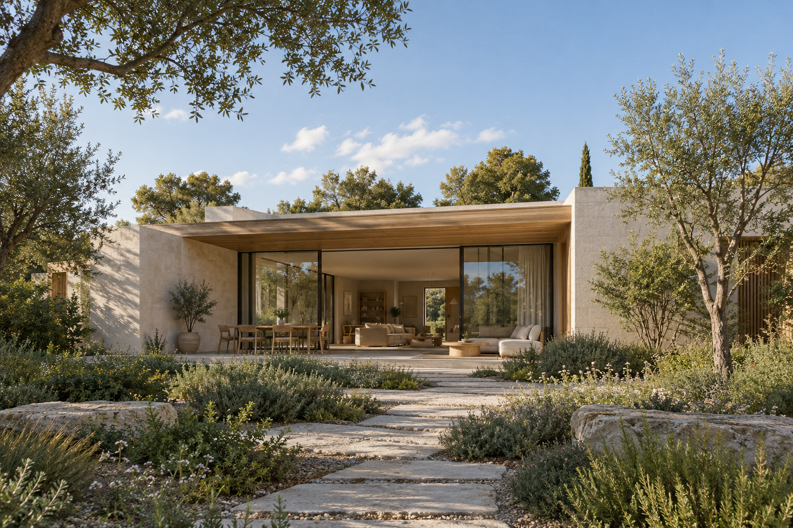
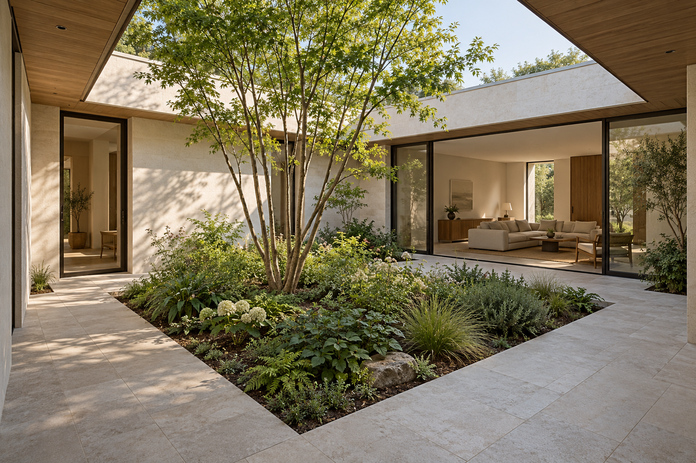
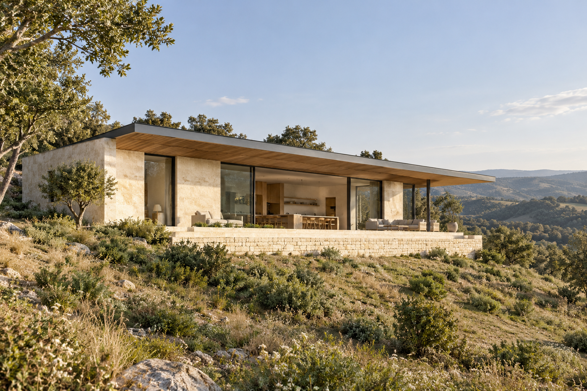
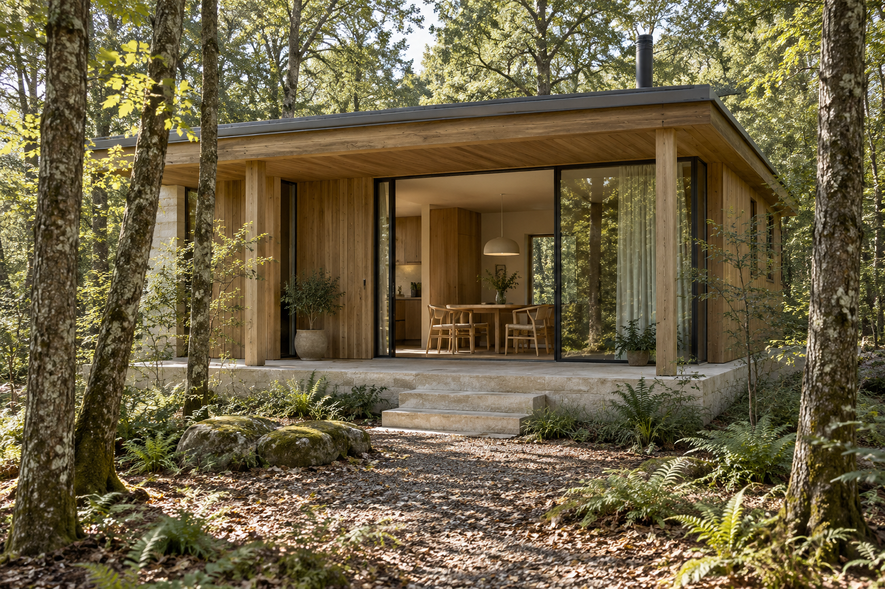

K08 / ImageGen crop review
AI-generated fictional residential concepts. Crop study only; these images are not yet integrated into the KILN page.

Hero — frame and focal point from DESIGN.md. No colour filters or overlays.

Courtyard House
Planted centre, enclosing walls, shaded circulation and living-room connection.

Ridge House
Complete horizontal volume, supported eave, stone base and open horizon.

Woodland Retreat
Compact timber volume, protected entrance, steps and shared table.